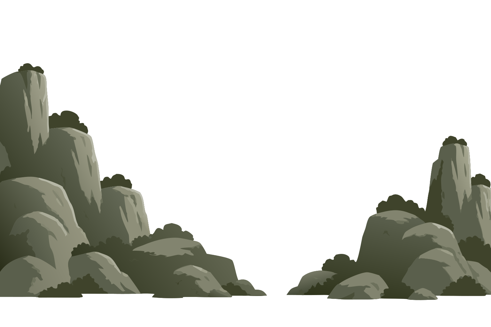
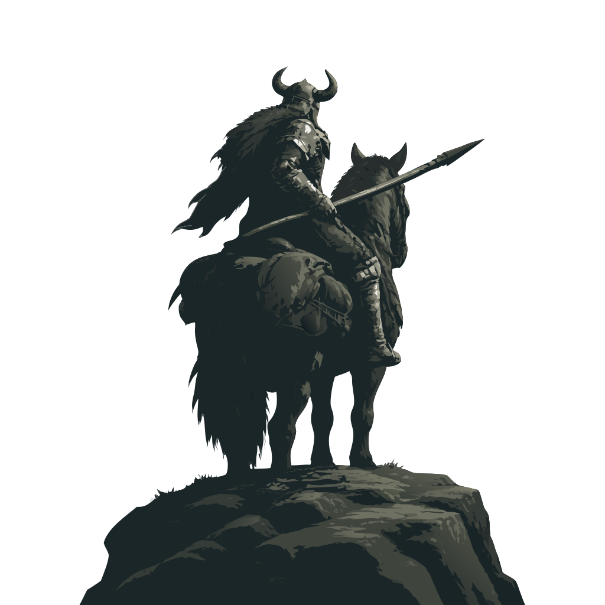
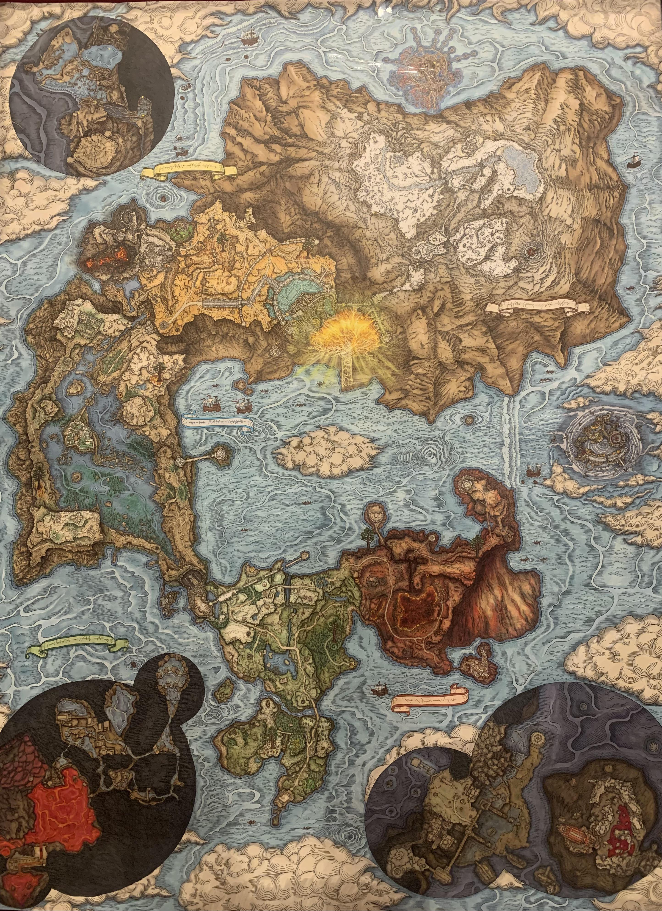
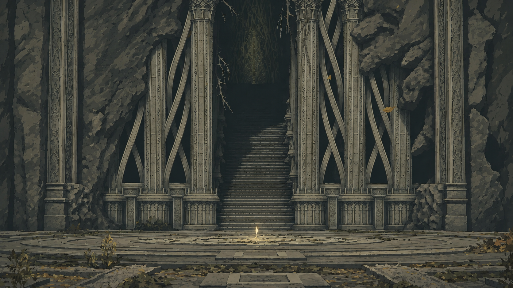
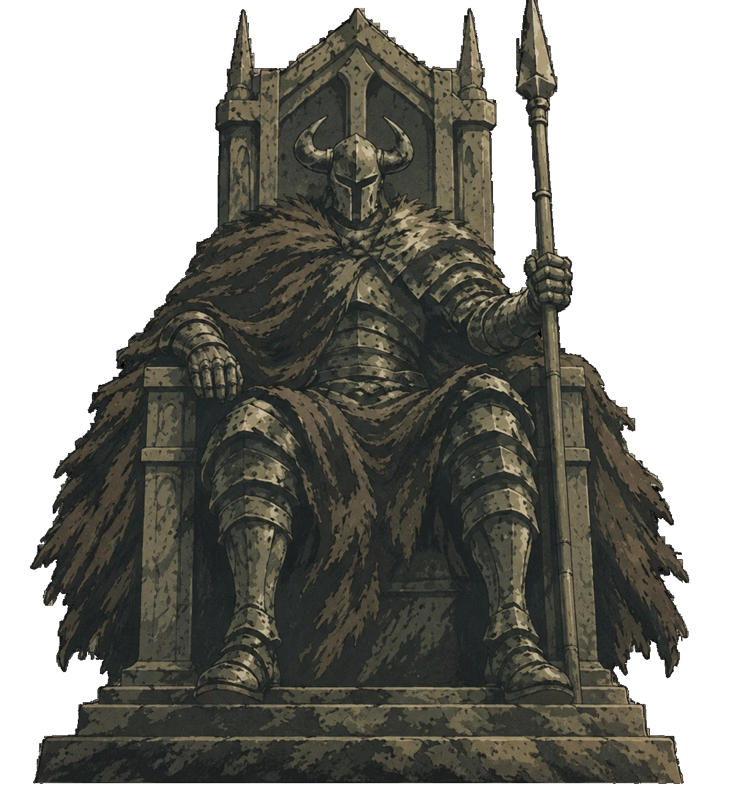

Le sans-éclat







L'Anneau d'Elden se brise, et un éclat de lumière déchire le ciel. Dans un silence lourd, l'ordre qui tenait le monde vole en morceaux.
Les demi-dieux, enfants de la reine Marika, se disputent les fragments de l'Anneau. Chacun veut le pouvoir pour lui seul, et personne ne veut céder.
Le monde sombre, et la guerre commence. Les terres se couvrent de ruines pendant que l'Arbre-Monde brille encore au loin.


Le Sans-éclat commence donc sa route vers les demi-dieu pour les déthroner de leurs reigne de torture et prendre le throne d'elden pour y appliqué sa loi


Les prairies sont vertes, mais les ruines rappellent déjà la guerre.
Un pays de lacs et de brume, où l'académie de Raya Lucaria veille au loin.
Une terre rouge et dévastée, rongée par la pourriture écarlate.
Godrick

En premier se fut Godrick le greffé qui tomba
Rennala

Ensuite le sans-éclat a battu Rennala, reine de la pleine lune sans la tuer, au fond, elle n'était pas méchante
Malenia

Après de multiple autre combat le sans-éclat tua l'épeiste qui n'avais jamais perdu, Malenia
Des boss à vaincre, des armes et des armures à ramasser : voici l'ampleur des Terres Intermédiaires.


Après tous ses combats, le Sans-éclat répare l'Anneau d'Elden.
L'Arbre-Monde retrouve sa lumière.
Le héros s'assoit sur le trône : il devient Seigneur d'Elden.